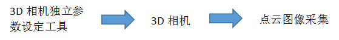
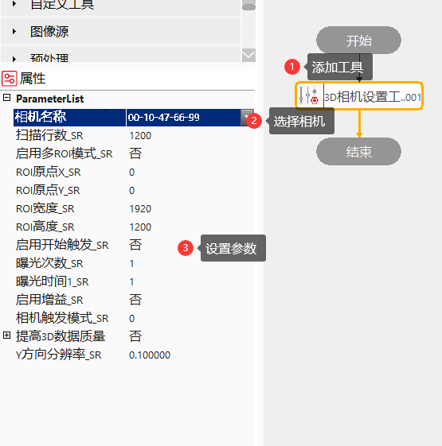
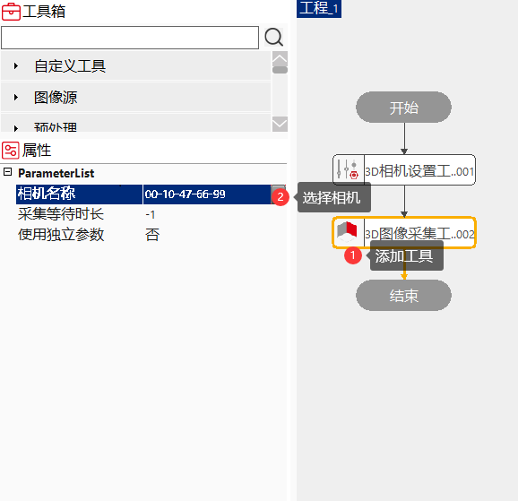

3D相机设置工具能够对选择的3D相机采集相关常用参数进行设置，例如：曝光、相机有效ROI、采集图像行数等参数。
下图是3D相机设置工具常规使用流程：

3D图像采集过程中，同一个相机，采集不同位置的图像过程中，可能要使用不同的相机采集参数，呈现出产品的不同特征，例如曝光、相机有效ROI、采集图像行数、是否使用开始拍照触发信号等相机可修改参数。
3D相机设置工具通过获取选择的3D相机常用参数和工具属性栏参数进行对比，将不相等的属性栏参数通过3D相机设置API接口，写入相机。


| 现象描述 | 解决方法 |
|---|---|
| 设置完成后，保存工程，重新打开工程，属性栏没有参数显示，或只有相机SN显示 | 检查相机连接异常，重新连接相机 |
| 工具执行失败 | 检查参数是否合理、相机是否掉线、相机是否处于正常状态、参数文件路径是否存在 |
| 参数名称 | 参数说明 |
|---|---|
| 相机名称 | 输入的相机SN编号 |
| 扫描行数_SR | 3D相机采集工具采集截止行数 |
| 启用多ROI模式_SR | 是：显示导入多ROI文件_SR；否：显示ROI设置参数； |
| 导入多ROI文件_SR | 选择多ROI文件的路径 |
| 采集ROI原点X_SR | 相机采集范围ROI左上角原点X值 |
| 采集ROI原点Y_SR | 相机采集范围ROI左上角原点Y值 |
| 采集ROI宽度_SR | 相机有效采集范围ROI宽度 |
| 采集ROI高度_SR | 相机有效采集范围ROI高度 |
| 启用开始触发_SR | 开启/关闭开始触发条件 |
| 开始触发源_SR | 0-Input0; 1-Input1; 2-Input2; 3-Input3; -1-无触发输入 |
| 开始触发沿_SR | 0-上升沿; 1-下降沿; 2-任意; |
| 曝光次数_SR | 相机曝光次数，大于等于1，小于等于4 |
| 曝光时间1_SR | 第一次曝光的值 |
| 曝光时间2_SR | 第二次曝光的值 |
| 曝光时间3_SR | 第三次曝光的值 |
| 曝光时间4_SR | 第四次曝光的值 |
| 相机增益_SR | 相机增益 |
| 相机触发模式_SR | 0-自由模式；1-内触发；2-外触发 |
| 内触发频率_SR | 内触发频率 |
| 外触发源_SR | 0-Input0; 1-Input1; 2-输入组合模式; 4-编码器 |
| 外触发沿设置_SR | 0-上升沿; 1-下降沿; 2-任意 |
| 外触发分频_SR | 数据触发差分 |
| 外触发延时_SR | 数据触发延时 |
| Y方向分辨率_SR | 相机扫描间隔距离，单位：毫米 |
| 工作模式_MP | 0-快速；1-标准；2-精准；3-超准； |
| 触发模式_MP | 0-软件触发；1-内部连续触发；2-Input0；3-Input1 |
| 曝光时间_MP | 范围：[500,50000],单位：us |
| 照明次数_MP | 照明次数设置从1开始，范围：[1,3] |
| 照明亮度1_MP | 范围：[0,255] |
| 照明亮度2_MP | 范围：[0,255] |
| 照明亮度3_MP | 范围：[0,255] |
| 参数配置编号_SS | 范围：[0,63] |
| 扫描行数_SS | 3D相机采集工具采集截止行数，范围：[50,15000] |
| Y方向分辨率_SS | 相机扫描间隔距离，单位：毫米 |
| 触发模式_LC | 0-软件触发；1-连续触发；2-Input0; |
| 启用ROI_LC | |
| ROI原点X_LC | 相机采集有效区域ROIX |
| ROI原点Y_LC | 相机采集有效区域ROIY |
| ROI宽度_LC | 相机采集有效区域ROI宽度 |
| ROI高度_LC | 相机采集有效区域ROI高度 |
| 曝光时间_LC | 范围：[8333,100000] |
| 照明次数_LC | 照明次数设置从1开始，范围：[1,3] |
| 照明亮度1_LC | 范围：[0,100] |
| 照明亮度2_LC | 范围：[0,100] |
| 照明亮度3_LC | 范围：[0,100] |
| 参数名称 | 参数说明 |
|---|---|
| 执行结果 | 执行结果 |
| 执行时间 | 执行时间 |
无